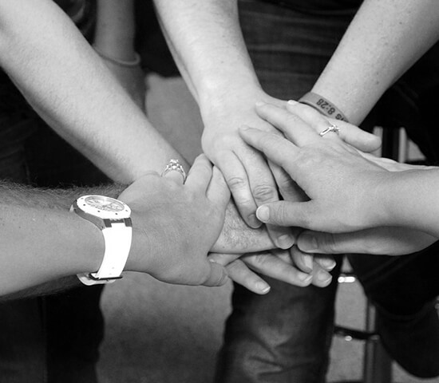
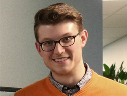
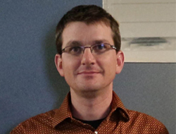

HİKAYEMİZ
Fateh Al-Wakil Sürdürülebilir Kalkınma Derneği'nin kökleri, kuruluşun resmi tescilinden çok önce başladı. Yıllar boyunca Sudan'da, kırılgan topluluklara yönelik yüzlerce bireysel ve gönüllü insani yardım faaliyeti gerçekleştirildi.
Bu birikim, 2024 yılında Sudan Bakanlar Kurulu'na bağlı İnsani Yardım Komisyonu (HAC) nezdinde 436/2024 sicil numarasıyla ulusal gönüllü kuruluş olarak tescillenerek resmi bir çatı altına taşındı. Tescil, 2006 tarihli Gönüllü ve İnsani Faaliyetler Kanunu ve ilgili yönetmeliklere göre yapılmıştır.
Bugün derneğimiz; sağlık, acil insani yardım ve sürdürülebilir toplum kalkınması alanlarında, Sudan'daki yerinden edilmiş ailelere ve kırılgan topluluklara ulaşmaya devam ediyor.
Resmî Tescil: Sudan Bakanlar Kurulu İnsani Yardım Komisyonu (HAC), NGOs Registrar General — C.NO: 436/2024
Misyonumuz
Sudan'daki kırılgan topluluklara sürdürülebilir kalkınma ve insani yardım ulaştırmak.
Sürdürülebilir Kalkınma
Sağlıktan eğitime, uzun vadeli toplum kalkınması programları yürütüyoruz.
Acil İnsani Yardım
Yerinden edilmiş aileler ve kırılgan topluluklar için saha müdahalesi sağlıyoruz.
Projelerimiz
Sahadaki ihtiyaca göre şekillenen sağlık, eğitim ve acil yardım programları.
Yönetim

Sitna Mohammed Al-Hajj Abdullah
Fateh Al-Wakil Sürdürülebilir Kalkınma Derneği'nin Müdiresi olarak, derneğin Sudan'daki saha operasyonlarını yönetiyor.

Dr. Umeyma Mohammed Al-Hajj Abdullah
İstanbul Üniversitesi Tıp Fakültesi Diş Hekimliği bölümünden 1991 yılında mezun oldu. Türkiye'de diş hekimi olarak çalışırken, yıllardır Sudan'da yüzlerce insani yardım faaliyetine öncülük etti. Derneğin Genel Sekreteri olarak görev yapıyor.